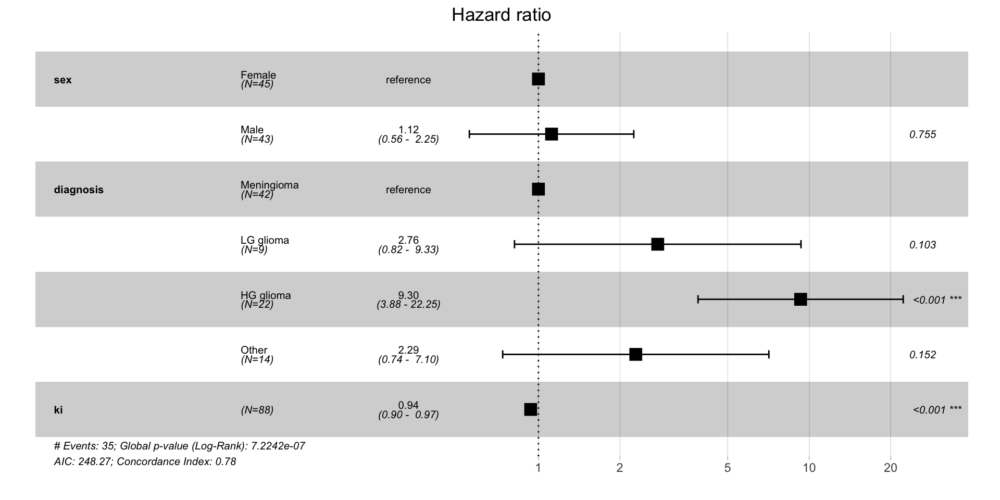

Survival analysis üèïÔ∏è
Statistical methods for time-to-event data
- Originally applied to time until death in 17th-century mortality studies
- Now widely used in various fields:
- Medicine (e.g., time to relapse)
- Marketing (e.g., time to next purchase)
- Engineering (e.g., time to failure)
- Criminology (e.g., time to reoffend)
Survival analysis is not limited to studying time-based events.
- We can study the number of treatment sessions until a patient recovers
- or the number of attempts until a student passes an exam.
- Common feature: censored data
Survival and censoring times
Let’s imagine:
- a mortality study of terminally ill patients receiving a medical treatment.
- We follow a group of patients over 24 months follow-up period
- and record the time until death or until the end of the study.
For each patient, we suppose there is:
- a true survival time \(T\)
- representing the time at which the event of interest occurs (here death)
- a censoring time \(C\)
- representing the time at which the patient is lost to follow-up or the study ends.
We observe the random variable \[Y = min (T, C)\]
- If the event occurs before censoring (i.e. \(T < C\)) then we observe the true survival time \(T\).
- Otherwise, if censoring occurs before the event (i.e. \(T > C\)), we observe the censoring time \(C\).
We also observe a status indicator
\[\begin{equation}
\sigma =
\left\{
\begin{array}{cc}
1 & \mathrm{if\ } T \le C \\
0 & \mathrm{if\ } T>C \\
\end{array}
\right.
\end{equation}\]
Survival and censoring times
Figure 1: Example of right-censored data in a mortatily study lasting 24 months. The horizontal lines represent the time to event or censoring for each patient. The points indicate whether the event occurred (event) or not (censored).
- for P1 we get \((y_1= t_1, \space \sigma_1 = 1)\) since we observe event (death) as ca. 23 months, before the end of the follow-up at 24 months.
- for P2 we get \((y_2= c_1, \space \sigma_1 = 0)\) since the patient is still alive at the end of the study at 24 months, meaning that the patient has survied at least 24 months (censored)
- for P4, we get \((y_4= c_4, \space \sigma_4 = 0)\), anther censored data point. The study is not over yet, the patient has not diet but is lost to follow-up, e.g. due to withdrawing from the study
Independent Censoring
Assumptions
To analyze survival data correctly, we must assume:
- Censoring is independent of the event process
- i.e. the reason for censoring is unrelated to the risk of the event
- Censored individuals are assumed to have the same event probability as those still under observation
Example
- ✅ Valid: Patients leave a cancer study for unrelated reasons (e.g., moving away)
- ❌ Violation: Patients drop out because they are very sick (higher event risk)
Left and interval censoring
Figure 2: Example of left and interval censoring in an age study. Left-censored patients were diagnosed before the study, and interval-censored patients were diagnosed between visits.
Kaplan-Meier estimator
The survival curve, or survival function, is a decreasing function that quantifies the probability of surviving past time \(t\) and is defined as \[S(t) = Pr(T > t) \qquad(1)\]
The Kaplan-Meier (KM) estimator is a non-parametric statistic used to estimate the survival function from lifetime data and is given by: \[\hat{S}(t) = \prod_{j=1}^{t} \left( 1 - \frac{d_j}{n_j} \right) \qquad(2)\]
where:
- \(d_j\): number of failures at time \(t_j\)
- \(n_j\): number of patients at risk just before time \(t_ij\)
- and the product is taken over all time intervals in which a death occurred, up to and including \(t\)
Kapalan-Meier estimator is also known as product-limit estimator.
Kaplan-Meier estimator
Tooth filling example
Suppose we have 10 patients who receive a tooth filling, and we want to track how long these fillings last before they fail. The failure times (in months) for each patient are recorded:
'data.frame': 10 obs. of 3 variables:
$ patientID: int 1 2 3 4 5 6 7 8 9 10
$ time : num 10 8 11 5 4 3 7 6 12 8
$ surv : num 1 1 1 1 1 1 1 1 1 1
To calculate the Kaplan-Meier Curve:
- We sort the data by time to failure.2.
- For each time, we calculate the survival probabilities, i.e. the probability the filling lasting beyond that time.
- We apply the Kaplan-Meier formula \[\hat{S}(t) = \prod_{j=1}^{t} \left( 1 - \frac{d_j}{n_j} \right)\] to calculate the probability of surviving up to time \(t\), as the product of all individual survival probabilities at each time up to \(t\):
| 3 |
10 |
1 |
1 - \(\frac{1}{10}\) = 0.9 |
0.9 |
| 4 |
9 |
1 |
1 - \(\frac{1}{9}\) = 0.888 |
0.9 \(\times\) 0.888 = 0.8 |
| 5 |
8 |
1 |
1 - \(\frac{1}{8}\) = 0.875 |
0.8 \(\times\) 0.875 = 0.7 |
| 6 |
7 |
1 |
1 - \(\frac{1}{7}\) = 0.857 |
0.7 \(\times\) 0.857 = 0.6 |
| 7 |
6 |
1 |
1 - \(\frac{1}{6}\) = 0.833 |
0.6 \(\times\) 0.833 = 0.5 |
| 8 |
5 |
2 |
1 - \(\frac{2}{5}\) = 0.6 |
0.5 \(\times\) 0.6 = 0.3 |
| 10 |
3 |
1 |
1 - \(\frac{1}{3}\) = 0.667 |
0.3 \(\times\) 0.667 = 0.2 |
| 11 |
2 |
1 |
1 - \(\frac{1}{2}\) = 0.5 |
0.2 \(\times\) 0.5 = 0.1 |
| 12 |
1 |
1 |
1 - \(\frac{1}{1}\) = 0 |
0.1 \(\times\) 0 = 0 |
- At 3 months: 10 patients are at risk, and 1 failure occurs, so the survival probability for this period is 0.9.
- For 4 months: 9 patients are at risk (since one patient failed at 3 months), and the survival probability is now cumulative (0.9 from the first interval multiplied by 0.888 from this interval).
- At time 8 months: two failures occur and the survival probability drops more sharply.
- At time 12 months: the survival probability reaches 0, indicating that all patients experienced the event (tooth filling failure) by the end of the study.
Kaplan-Meier estimator
Figure 3: Kaplan-Meier survival curve for tooth filling data. The curve shows the estimated probability of survival (filling intact) over time.
Kaplan-Meier estimator
Tooth filling example with censored data
- In real life, not all patients may have complete follow-up data.
- Some patients might drop out of the study or do not experience an event by the end of the study period.
- Let’s update the data with censoring for two patients
'data.frame': 10 obs. of 3 variables:
$ patientID: int 1 2 3 4 5 6 7 8 9 10
$ time : num 10 8 11 5 4 3 7 6 12 8
$ surv : num 0 1 1 0 1 1 1 1 1 1
- To get KM estimates, we can use the same Kaplan-Meier formula, but now we need to account for the censored data.
- For censored patients, we do not count them in the number of failures, but they are still included in the “at-risk” population until they are censored.
| 3 |
10 |
1 |
0 |
\(1 - \frac{1}{10} = 0.9\) |
0.9 |
| 4 |
9 |
1 |
0 |
\(1 - \frac{1}{9} = 0.888\) |
0.9 \(\times\) 0.888 = 0.8 |
| 5 |
8 |
0 |
1 |
|
0.8 |
| 6 |
7 |
1 |
0 |
\(1 - \frac{1}{7} = 0.857\) |
0.8 \(\times\) 0.857 = 0.686 |
| 7 |
6 |
1 |
0 |
\(1 - \frac{1}{6} = 0.833\) |
0.686 \(\times\) 0.833 = 0.571 |
| 8 |
5 |
2 |
0 |
\(1 - \frac{2}{5} = 0.0.6\) |
0.571 \(\times\) 0.6 = 0.343 |
| 10 |
3 |
0 |
1 |
|
0.343 |
| 11 |
2 |
1 |
0 |
\(1 - \frac{1}{2} = 0.5\) |
0.343 \(\times\) 0.5 = 0.171 |
| 12 |
1 |
1 |
0 |
\(1 - \frac{1}{1} = 0\) |
0.171 \(\times\) 0 = 0 |
Censoring affects the calculations:
- At 5 months, one patient is censored, so we do not record a failure, and the cumulative survival rate remains unchanged.
- At 10 months, one more patient is censored. Again, there is no effect on the failure probability, but the number of at-risk patients decreases.
- In other words, if a patient is censored, they contribute to the number of at-risk patients until their censoring time, but they do not contribute to the event (failure) counts.
Kaplan-Meier estimator
Figure 4: Kaplan-Meier survival curve for tooth filling data. The curve shows the estimated probability of survival (filling intact) over time.
Kaplan-Meier estimator
Interpretations
The Kaplan-Meier curve shows the cumulative survival probabilities.
- A steeper slope indicates a higher event rate (death rate) and therefore a worse survival prognosis.
- A flatter slope indicates a lower event rate and therefore a better survival prognosis.
- The curve may have plateaus or flat areas, indicating periods of relatively stable survival.
Kaplan-Meier estimator
Interpretations
At specific time points, we can estimate the survival probability:
- by locating the time point on the horizontal axis and dropping a vertical line to the curve
- then, reading the corresponding survival probability from the vertical axis.
- So, what is the probability that a tooth filling will last 10 months?
Kaplan-Meier estimator
Interpretations
If there are multiple curves representing different groups, we can compare their shapes and patterns.
- If the curves are parallel, it suggests that the groups have similar survival experiences.
- If the curves diverge or cross, it indicates differences in survival between the groups.
Comparisons of hazards
- Goal: Compare survival times across groups (e.g., men vs. women in a tooth filling study)
- Problem: Survival curves may cross, i.e. differences are not constant over time
- Solution: Compare hazards in the groups instead of survival probabilities
- and we also assume that the ratio of the hazards in the two groups remains constant over time, even if the underlying hazards change.
Proportional Hazards Assumption
- Assume hazard ratio is constant over time: \[
\frac{h_1(t)}{h_0(t)} = \text{constant}
\]
- ( h_1(t) ), ( h_0(t) ): hazards in two comparison groups at time \(t\)
Mantel-Cox (log-rank test)
- Tests for differences in survival between two or more groups
- Assumes proportional hazards
- Null hypothesis: no difference in survival curves
- Compares the observed vs. expected number of events in each group
- Test statistic follows a chi-square distribution
At each time event, we can set-up a table:
| Group A |
\(d_{jA}\) |
\(r_{jA} = n'_{_jA} - d_{jA}\) |
\(n'_{jA}\) |
| Group B |
\(d_{jB}\) |
\(r_{jB} = n_{_jB} - d_{jB}\) |
\(n'_{jB}\) |
| Total |
\(d_j = d_{jA} + d_{jB}\) |
\(r_j = r_{jA} + r_{jB}\) |
\(n'_j = n'_{jA} + n'_{jB}\) |
where:
- Group A and Group B represent the two groups being compared (e.g., two different treatments, genders, etc.).
- Died (\(d_{jA}\), \(d_{jB}\)): The number of individuals who experienced the event (e.g., death, tooth filling falling out) in each group.
- Survived (\(r_{jA}\), \(r_{jB}\)): The number of individuals who did not experience the event (survivors, with tooth filling intact) in each group. This is calculated as the total number in the group minus the number of deaths.
- Total (\(n_A\), \(n_B\)): The total number of individuals in each group at risk just before the time of an event
Mantel-Cox (log-rank test)
The log-rank test compares the observed number of events to the expected number of events if the survival curves were the same for all groups.
The expected number of events in group A at each event time is denoted by: \[E(d_{jA}) = \frac{n'_{jA}d_i}{n'_j}\] and analogously for group B \[E(d_{jB}) = \frac{n'_{jB}d_j}{n'_j}\]
The difference between observed and expected number of events is evidence against the null hypothesis. The Mantel-Cox chi-squared (log-rank) its simple for is the combination of these differences over all the times at which deaths (events) occurred: \[
\chi^2_{MC} = \sum_{j} \left( \frac{(O_{jA} - E_{jA})^2}{E_{jA}} + \frac{(O_{jB} - E_{jB})^2}{E_{jB}} \right)
\]
with 1 \(df\).
Regression with survival data
Cox proportional hazards model
Studying relationship between survival time and predictors
Cox PH model
- Is used to estimate the hazard ratio for individuals based on their covariates.
- Is used to study how different factors affect the risk of an event over time
- e.g. Is an older patient more likely to relapse sooner than a younger one?
- The model gives relative risk, not absolute predictions of survival time . . .
The risk of death at time \(t_j\) for each subject in the risk set is given by: \[h(t|\boldsymbol{x}) = h_0(t)\textrm{exp}(\boldsymbol{\beta}^T\boldsymbol{x})\]
where:
- \(h(t|\boldsymbol{x})\): hazard at time \(t\) for a subject with covariates \(\boldsymbol{x}\)
- \(\boldsymbol{\beta}^T\boldsymbol{x}\) is the matrix representation of the regression function, \(\beta_1x_1 + \beta_2x_2 + \cdots + \beta_px_p\)
- and \(h_0(t)\) is baseline hazard function (common to all)
- \(\exp(\boldsymbol{\beta}^T \boldsymbol{x})\): relative effect of covariates
Cox PH model
Example with brain cancer data
The BrainCancer data set from the ISLR2 package contains survival times for patients with primary brain tumors undergoing treatment with radiation therapy.
Variables included in the study are:
sex: male or femalediagnosis: meningioma, LG glioma, HG glioma, or otherloc: tumor location, infratentorial or supratentorialgtv: gross tumor volume \(cm^3\)ki: Karnofsky indexstereo: stereotatcic radiosurgery (SRS) or fractionated stereotactic (SRT) radiotherapy
Call:
coxph(formula = Surv(time, status) ~ sex + diagnosis + ki, data = data_brain)
n= 87, number of events= 35
(1 observation deleted due to missingness)
coef exp(coef) se(coef) z Pr(>|z|)
sexMale 0.11149 1.11795 0.35670 0.313 0.754608
diagnosisLG glioma 1.01441 2.75774 0.62159 1.632 0.102687
diagnosisHG glioma 2.22962 9.29629 0.44520 5.008 5.5e-07 ***
diagnosisOther 0.82773 2.28813 0.57751 1.433 0.151774
ki -0.06624 0.93591 0.01753 -3.778 0.000158 ***
---
Signif. codes: 0 '***' 0.001 '**' 0.01 '*' 0.05 '.' 0.1 ' ' 1
exp(coef) exp(-coef) lower .95 upper .95
sexMale 1.1179 0.8945 0.5556 2.2493
diagnosisLG glioma 2.7577 0.3626 0.8156 9.3251
diagnosisHG glioma 9.2963 0.1076 3.8847 22.2467
diagnosisOther 2.2881 0.4370 0.7377 7.0967
ki 0.9359 1.0685 0.9043 0.9686
Concordance= 0.782 (se = 0.038 )
Likelihood ratio test= 36.59 on 5 df, p=7e-07
Wald test = 34.11 on 5 df, p=2e-06
Score (logrank) test = 40.79 on 5 df, p=1e-07
Based on the results:
- The estimated hazard ratio (HR) for a male patient is \(e^{0.11} = 1.11\). This means that men have 1.11 times the hazard of dying than women while keeping other variables constant (adjusted hazard ration, AHR).
- The associated p-value of 0.75 (large) indicates that this difference is not statistically significant.
- One-unit increase in the Karnofsky index is corresponds to a multiplier of \(e^{-0.06} = 0.94\) in the chance of dying. The higher the Karnofsky index score, the lower the chance of dying at any given point in time, with this effect being highly significant \(p\)-value of 0.000158.
- To find HR associated with for patients with 10 units higher Karnofsky index, we calculate HR as \(e^{-0.06 \times 10} = 0.54\). This means that patients with 10 units higher Karnofsky index have 0.54 times the hazard of dying compared to those with lower Karnofsky index.
Cox PH model
Forest plot
Sometimes, in addition to reporting the numeric results of a Cox regression, forest plots are used to visualize HRs and their 95% confidence intervals.

Cox PH model
Likelihood ratio test, Wald test, and Score test
Cox regression output includes three overall tests to evaluate whether the covariates collectively improve the model:
Likelihood Ratio Test (LRT)
- Compares the log-likelihood of:
- A null model (no covariates)
- A full model (with covariates)
- Tests whether the full model significantly improves fit
Wald Test
- Tests whether each coefficient \(\beta_i\) is significantly \(\neq 0\)
Score Test (Log-Rank Test)
- Assesses the contribution of predictors using the expected vs. observed events
- Like LRT, compares null and full models
- Uses a chi-squared distribution
Cox PH model
Concordance
- Measures how well the Cox model predicts the order of events
- Assesses: Can the model correctly identify who experiences the event earlier?
Interpretation:
- C-index = 0.5 → No better than random guessing
- C-index = 1 → Perfect prediction of event order
Example:
- A C-index of 0.782 means:
- The model correctly orders survival times in 78.2% of comparable pairs
- In 78.2% of cases, the individual with the higher predicted risk had the event first
- Standard error = 0.038:
- Quantifies uncertainty around the estimate
- Smaller SE → greater confidence in the result
Cox PH model
Predictions
In Cox regression, we can estimate:
- the survival probability at a specific time
- and the hazard ratio for an individual relative to a reference individual
Cox PH model
Time-dependent covariates
- So far, predictors (covariates) have been fixed over time
- But some predictors can change during follow-up
- e.g. in a heart attack study, blood pressure may change over time
The Cox model allows covariates \(\boldsymbol{x}(t)\) to vary with time: \[h(t | \boldsymbol{x}(t)) = h_0(t) \cdot \exp(\boldsymbol{\beta}^T \boldsymbol{x}(t))\]
- Follow-up time is split into intervals where covariates are constant
- Covariates are updated at each interval to reflect changes
Multiple events: competing risks
death from other causes
- In many studies, individuals are at risk of more than one event
- A competing risk is an event that prevents the event of interest from happening
Examples:
- Studying death from heart disease:
- Death from cancer = competing risk
- Studying cancer relapse:
- Death from any cause = competing risk
Why it matters:
- Cox PH model assumes only one type of event
- Ignoring competing risks can overestimate the chance of the event we are interested in
Beyond Cox PH model:
- The Cumulative Incidence Function (CIF) tells us the probability of a specific event happening over time, accounting for competing events
- Fine and Gray’s model, help include covariates when modeling competing risks
üíª Lab
In the lab there are examples of:
- constructing Kaplan-Meier estimator
- comparing survival curves with the log-rank test
- fitting Cox proportional hazards model
- interpreting the results of the Cox model
- predicting survival probabilities and hazard ratios
- handling time-dependent covariates
- dealing with competing risks using the Cumulative Incidence Function (CIF)